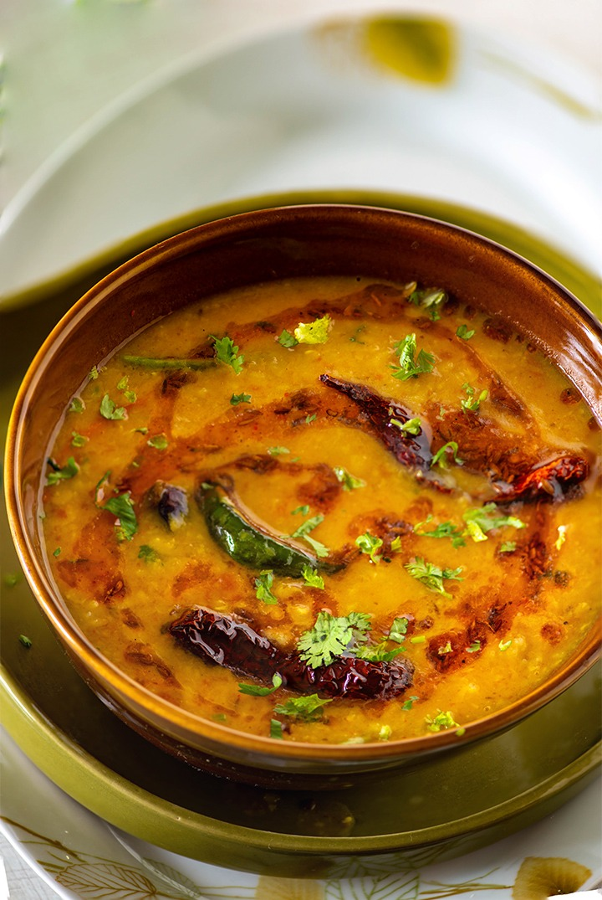

Dal

Description
A simple Indian lentil soup
Ingredients
- Oil
- Jeera
- Onion
- Ginger Garlic paste
- Tomato
- Dal
- Green Chilly
- Spices
Steps
- Heat oil in a pan
- Add jeera when oil is hot enough
- Chop onions and add it to the pan when jeera starts to sputter
- Add Chilly and saute until onions turn transclucent
- Add Ginger Garlic paste and let it heat till the raw smell goes away
- Add tomatos and cook for 2-3 mins
- Add all spices and cook till it becomes mushy
- Pressure cook dal, mash it and add to the pan
\
- Cook on high for 2 mins, cover and simmer for 10 mins
- Serve hot!